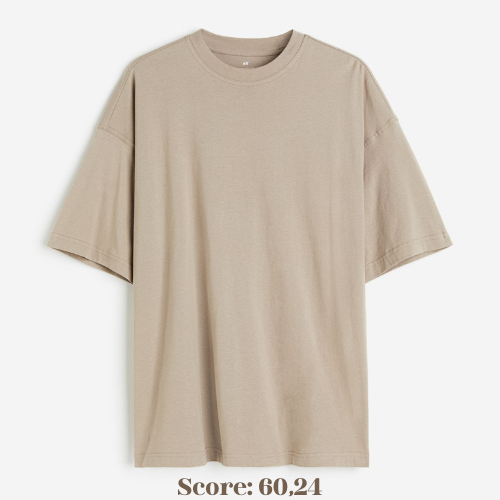

Une réorganisation mondiale
Une autre façon de produire est possible, à condition que tout le monde fasse des efforts.
Notre solution : créer un score textile à ne pas dépasser qui permettra de redéfinir les territoires et
manières de consommer.
Carbon 50
Carbon 50, un projet d'envergure mondiale, contrôle la population afin de réduire drastiquement l'impact de
l'Homme sur la nature.
Pour en savoir plus sur le projet global, cliquez ici.
Carbon 50 - tex
Comme vu précédemment, l'un des domaines ou il était urgent d'agir est l'industrie textile. Pour cela, notre
organisme assiste les
gouvernements dans l'instauration d'un système de score textile.
Adopter Carbon 50 - tex, c'est imposer une limite de consommation de textile à 3 échelles :

Calcul du score
Le calcul du score se fait en fonction de 3 critères :
Résultat
Avec ce sytème de score, la consommation en textile est raisonnable et la pollution limitée.
La nature peut reprendre ses droits.